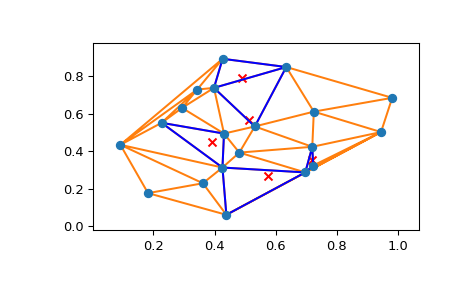

scipy.spatial.tsearch¶
-
scipy.spatial.tsearch(tri, xi)¶ Find simplices containing the given points. This function does the same thing as
Delaunay.find_simplex.New in version 0.9.
See also
Examples
>>> import numpy as np >>> import matplotlib.pyplot as plt >>> from scipy.spatial import Delaunay, delaunay_plot_2d, tsearch
The Delaunay triangulation of a set of random points:
>>> pts = np.random.rand(20, 2) >>> tri = Delaunay(pts) >>> _ = delaunay_plot_2d(tri)
Find the simplices containing a given set of points:
>>> loc = np.random.uniform(0.2, 0.8, (5, 2)) >>> s = tsearch(tri, loc) >>> plt.triplot(pts[:, 0], pts[:, 1], tri.simplices[s], 'b-', mask=s==-1) >>> plt.scatter(loc[:, 0], loc[:, 1], c='r', marker='x') >>> plt.show()
